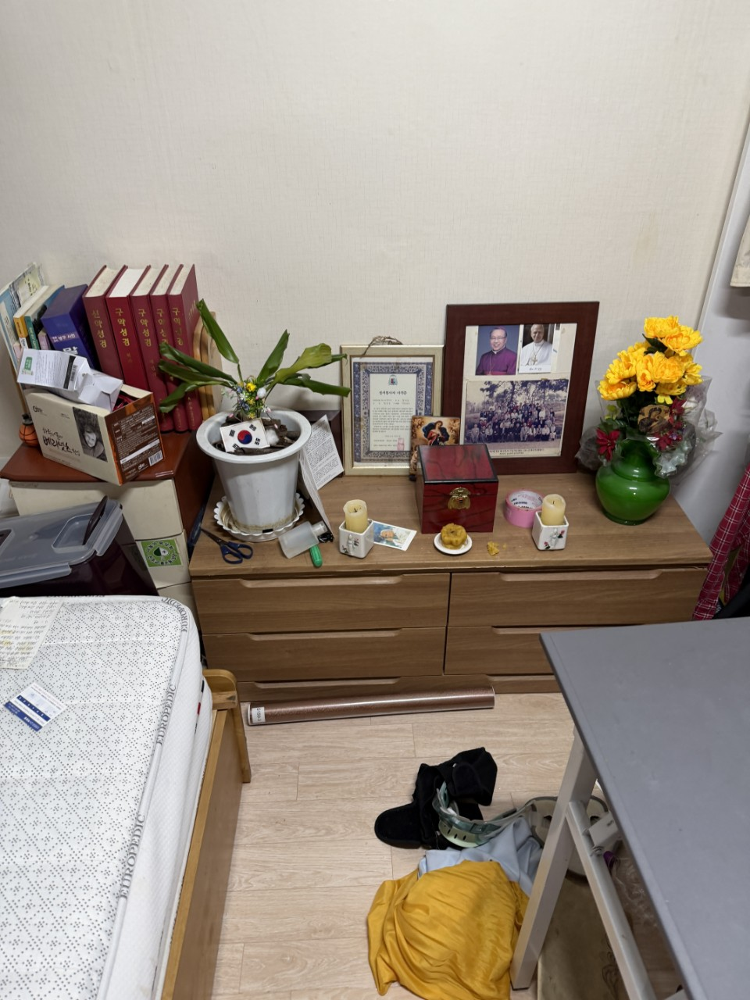

주민등록 주소의 행정동을 기준으로 합니다. 아천동이 포함되면 교문1동입니다. 건물만 보고 판단하지 않습니다.
교문1동 · 아천동·시청
교문1동·아천동
교문1동·아천동
주택 유품정리 상담
교문1동은 구리시청이 있는 행정동이며, 법정동 아천동이 포함됩니다. 아차산로를 따라 주택과 녹지가 이어지고, 한강 방향 아치울 일대는 마당이 있는 집이 있습니다. 교문2동처럼 밀집 상권이 아니라 주택형 동선이 많습니다. 구리 올바른정리는 교문1동 유품정리를 안채·창고 기준으로 보고, 오래 비운 집은 쓰레기집청소로 진행합니다.
SERVICE
구리시 교문1동에서 맡기는 작업
교문1동은 상속 주택 공실과 아천동 빈집 문의가 중심입니다.
유품정리
아천·교문 주택 유품
제사 공간과 안방이 분리된 집이 있어, 손대지 않을 방을 먼저 정합니다. 다락과 보일러실에 서류 상자가 있는 경우를 대비해 전등 유무도 확인합니다. 가져갈 가구는 마당에 따로 둡니다.
쓰레기집청소
아천동 빈집 적치 정리
수년 닫아 둔 집은 장판 아래 습기와 냄새가 있습니다. 먼저 창을 열고 적치물을 마당으로 낸 뒤 상차합니다. 정원 고사목·화분은 생활폐기물과 구분해 말씀드립니다.
PRICE
교문1동 비용이 달라지는 지점
교문1동은 마당 상차 가능 여부가 인창·교문2동과 다른 점입니다.
* 부가세 별도 · 시작가이며 현장 확인 후 확정
유품정리
45만원 부터~
주택 유품 45만원부터, 바깥채가 있으면 공간을 추가합니다.
고독사 특수청소
80만원 부터~
장기간 밀폐된 안방 오염은 80만원부터 특수청소입니다.
쓰레기집·일반폐기물
30만원 부터~
마당에서 바로 실으면 30만원대, 골목으로 손운반이면 인원이 늘습니다.
GUIDE
교문1동 유품정리는 교문2동과 무엇이 다른가요?
같은 교문이라도 1동은 아천동 주택형, 2동은 밀집 주거형에 가깝습니다.
구리시청 근처에서 유품정리를 맡기면 어떤 순서로 하나요?
아차산로 439 일대 생활권은 행정·주거가 붙어 있습니다. 유품정리는 가족 입회 또는 사전 지정 목록으로 시작하고, 시청 방향 교통이 혼잡한 시간대는 상차를 피합니다. 서류와 도장은 작업자가 임의로 버리지 않습니다.
아천동 쓰레기집청소는 왜 환기부터 하나요?
한강·아치울 쪽 주택은 오래 닫아 두면 습기가 찹니다. 적치물을 바로 뜯으면 악취가 퍼져, 창문을 연 뒤 봉투부터 마당으로 냅니다. 이 순서가 교문1동 쓰레기집청소의 기본입니다.
아차산 아래 집은 대형 트럭이 들어가나요?
경사와 꺾임이 있는 길이 있습니다. 현장 사진의 대문 앞 도로만 보면 1톤 진입 여부를 거의 판단할 수 있습니다. 들어가지 못하면 아래 도로에 본차를 둡니다.
교문1동 유품과 정원 폐기물을 같이 처리하나요?
화분·고사 나무는 양에 따라 가정폐기물에 포함하거나 별도입니다. 유품 분류가 우선이고, 정원은 마지막에 봐서 실내 재오염을 막습니다.
상담 시 교문1동이라고만 해도 되나요?
가능합니다. 아천동이면 아천동이라고 해 주시면 주택형으로 바로 잡습니다. 사진에 마당이 보이면 견적이 빨라집니다.
PROCESS
교문1동 작업 순서
교문1동은 안채와 마당을 작업 구역으로 나눕니다.
STEP 01
손대지 않을 방 확정제사·보관 공간을 테이프로 구분해 유품 오분류를 막습니다.
STEP 02
실내 비우기방에서 마당으로 물건을 낸 뒤 실내 동선을 확보합니다.
STEP 03
마당 상차도로 진입이 되면 본차를 붙이고, 아니면 나눠 나릅니다.



FAQ
교문1동에서 자주 묻는 질문
검색·AI 답변에 쓰일 수 있도록 이 지역 기준으로 짧게 정리했습니다.
합니다. 주간 교통량을 피해 상차 시간을 조정합니다.
방 수와 창고에 따라 하루 또는 이틀입니다. 가족이 주말에만 오면 1차 분류, 2차 반출로 나눕니다.
됩니다. 적치 반출 후 오염이 남아 있으면 특수청소를 권합니다.